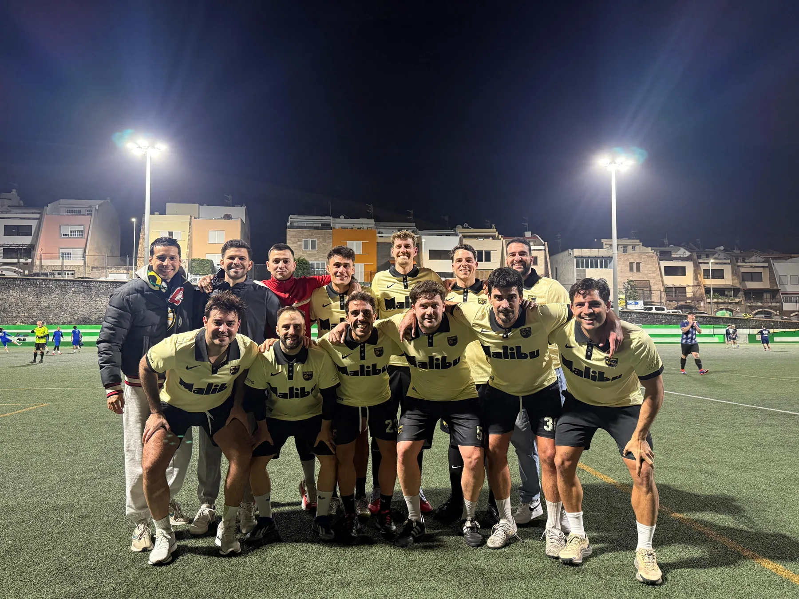
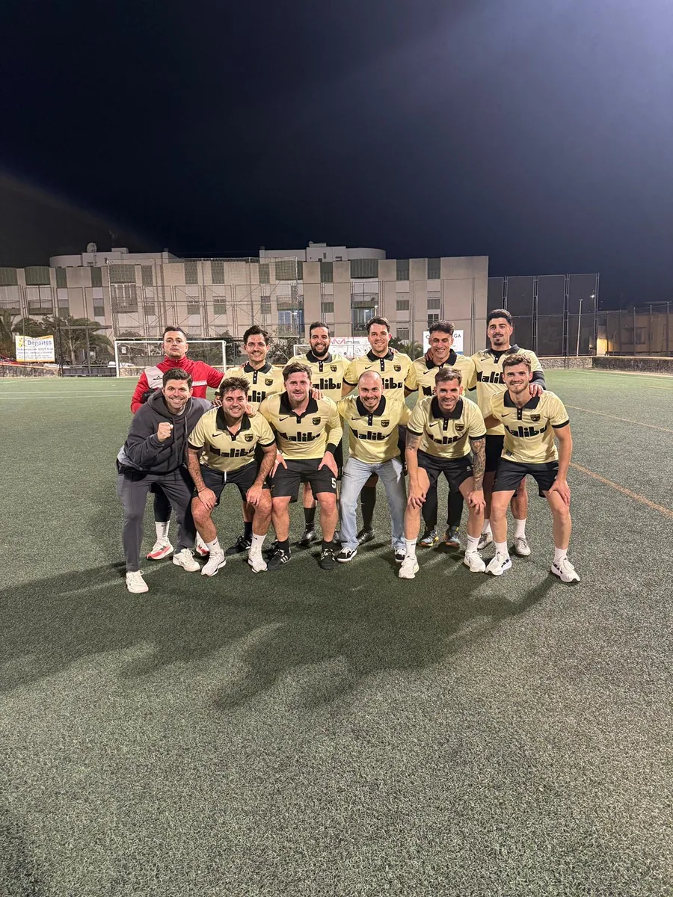
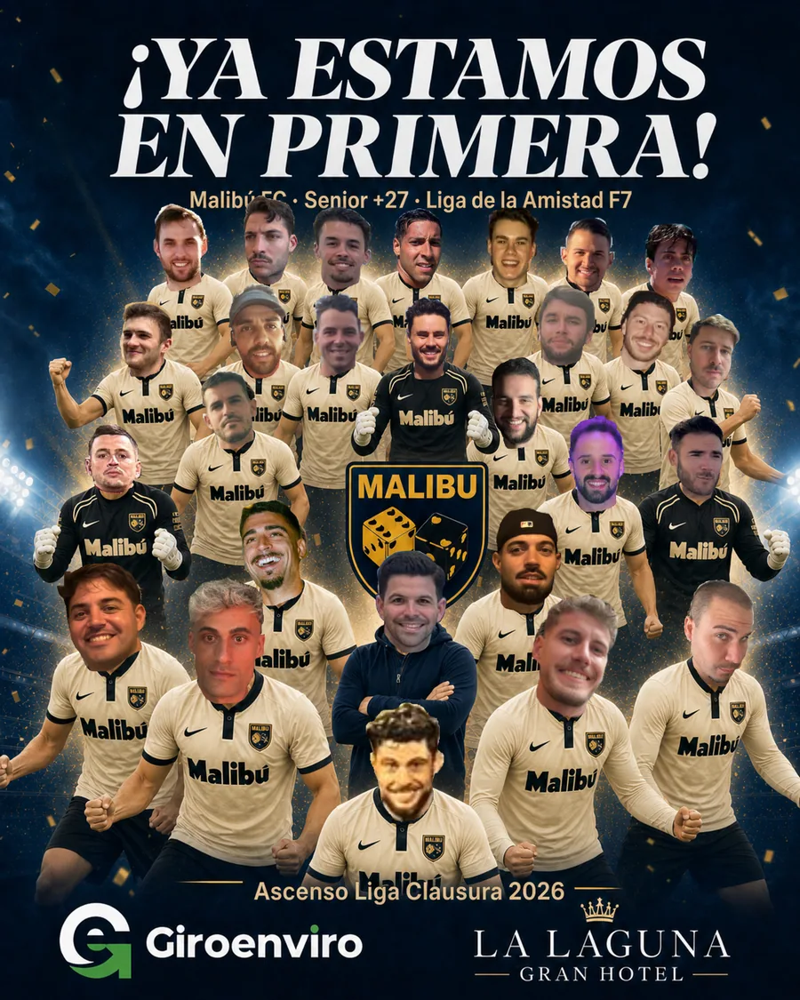

Tenerife · Canarias · Fútbol
Fútbol desde
Tenerife.
La casa digital del Malibú FC. Equipo, identidad, equipación y actualidad del club.
Malibú FC
Tenerife · CanariasEl club
Un equipo de fútbol con identidad canaria
Malibú FC es un equipo de fútbol de Tenerife, Canarias. Esta web reúne su identidad oficial, sus imágenes, su equipación y los canales vinculados al club.
El escudo, la equipación y las fotografías publicadas han sido aportados y autorizados por el club.
Historia del club
Una historia todavía por contar
Este apartado está en construcción. Aquí se recogerán los orígenes del Malibú FC, su evolución, sus temporadas y los momentos que forman la memoria del equipo.
En construcciónÁrea deportiva
Toda la información del Malibú FC
Consulta la plantilla, los próximos partidos y la equipación oficial en sus páginas propias.
Zona del club
Sigue el pulso del Malibú
Accede rápidamente a lo que está pasando: partidos, tienda y redes oficiales.
El calendario se publicará cuando estén confirmados los partidos.
Abrir calendarioConsulta la equipación, accesorios y diseños de referencia del club.
Entrar en la tiendaResultados, imágenes y novedades en el Instagram oficial del equipo.
Ver redes oficialesDías de fútbol
El Malibú FC sobre el terreno de juego



Competición
Jugamos en la Liga de la Amistad
Consulta la competición y sigue sus canales oficiales.
Alianzas
Entidades que apoyan al Malibú FC
Patrocinadores
Patrocinadores de la segunda equipación
Colaboradores
Contacto
Contacto directo con el club
El Instagram oficial ya está disponible. WhatsApp y correo se activarán después de su confirmación.